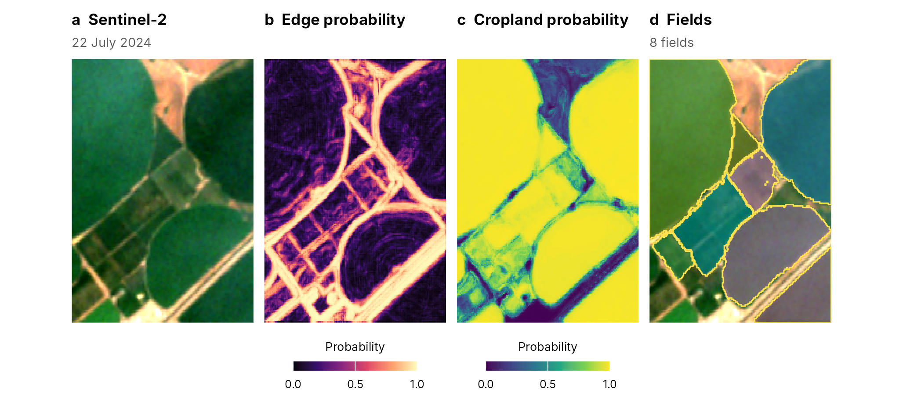
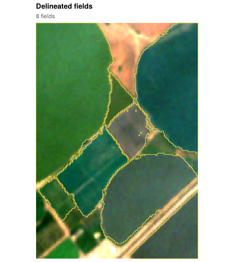
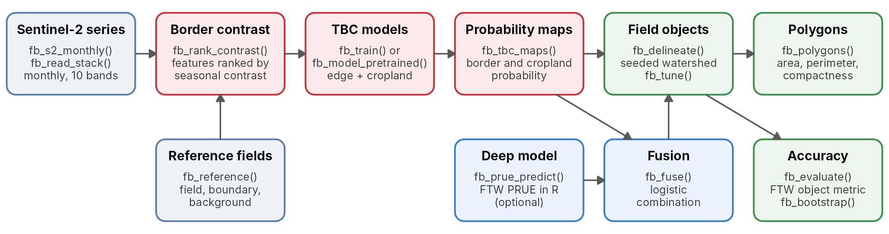
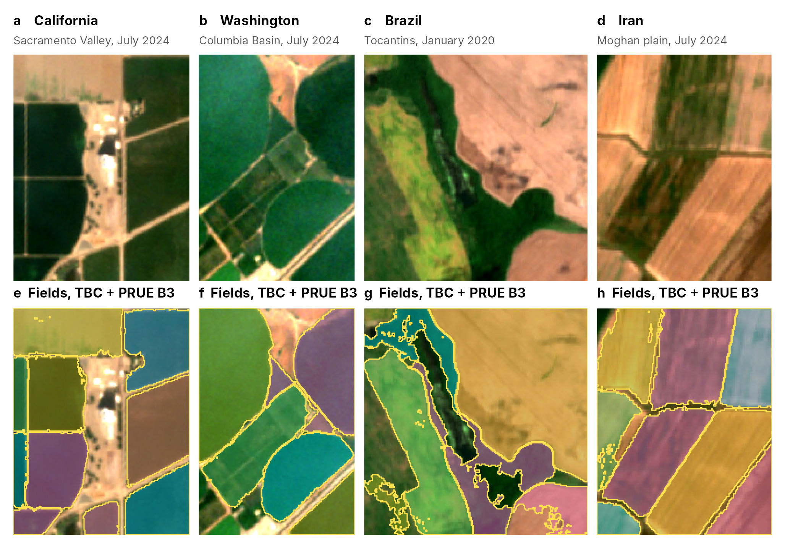
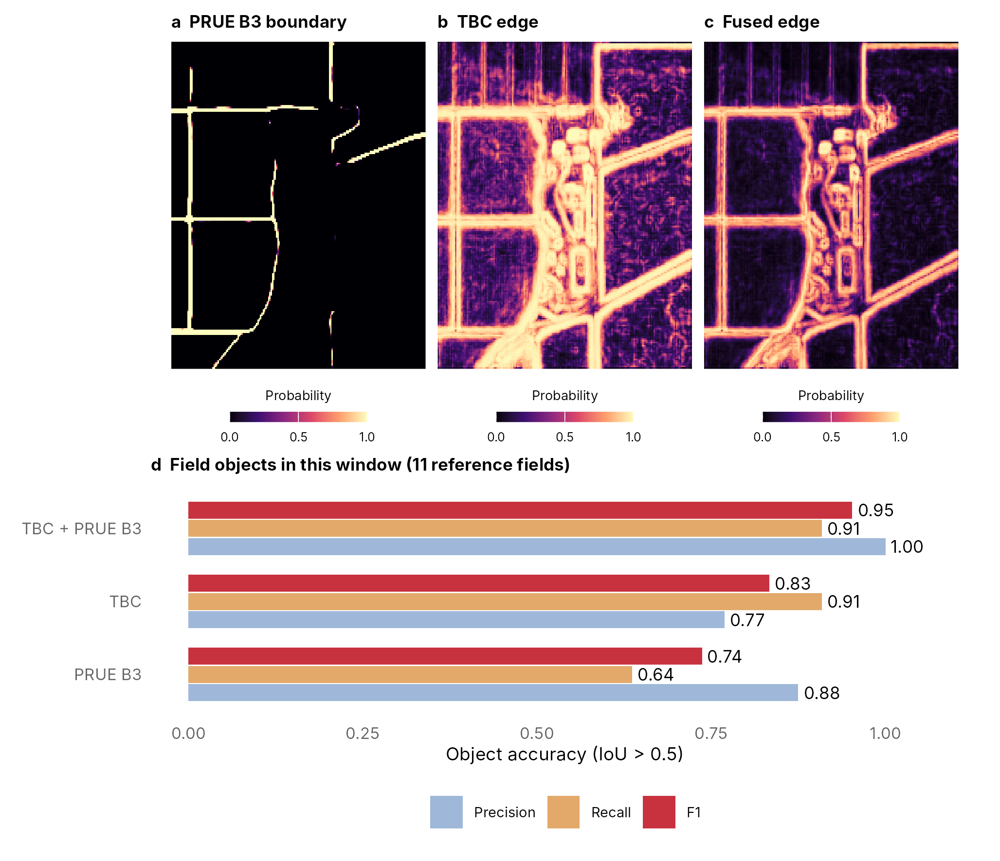
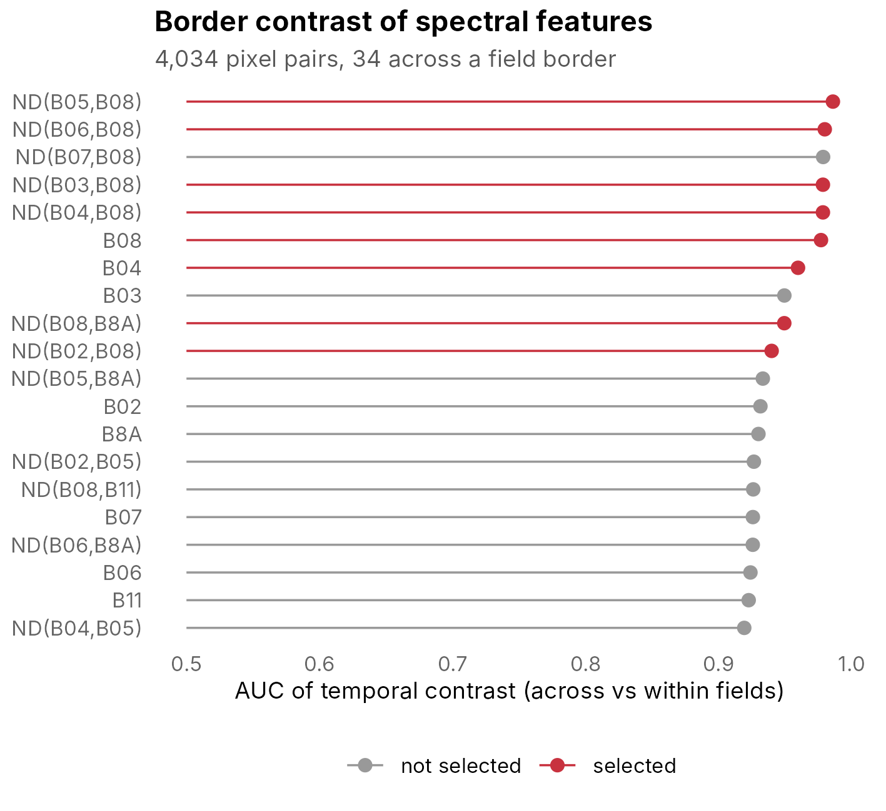
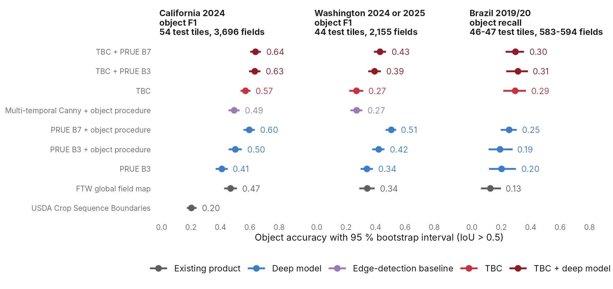

Agricultural field boundaries from Sentinel-2 time series
Documentation site: https://ehsanrahimi666.github.io/fieldborders/
Where one field ends and the next begins is often invisible in a single satellite image, but it shows over a season: neighbouring fields are sown, irrigated, cut and harvested at different times. fieldborders learns which spectral bands and indices change most differently across field borders through a year of monthly Sentinel-2 images (temporal boundary contrast, TBC), turns the selected contrasts into an edge map and a cropland map, and grows field objects from seeds inside fields by a marker-controlled watershed. It needs no deep network and no GPU, ships pretrained models, and can run and fuse the Fields of The World (FTW) PRUE deep models in R. Results come as rasters and polygons, scored with the object metric of the FTW benchmark.

Installation
fieldborders needs R (>= 4.1) with terra and sf. It contains C++ code, so installing from source needs a compiler: Rtools on Windows, the Xcode command line tools on macOS.
install.packages("remotes")
remotes::install_github("ehsanrahimi666/fieldborders")Optional packages: rstac to download Sentinel-2 (fb_s2_monthly()), torch to run the PRUE deep model (fb_prue_predict(); after installing it, run torch::install_torch() once), svid for published spectral indices as candidate features (remotes::install_github("ehsanrahimi666/_SVID")), and patchwork for the multi-panel figures of the articles.
Quick start (runs as-is, no files needed)
library(fieldborders)
s <- fb_example_stack("washington") # 11 monthly Sentinel-2 scenes, 10 bands, about 5 m
res <- fb_fields(s) # pretrained model: maps, field objects, polygons
res$polygons
#> Simple feature collection with 8 features and 6 fields
#> Geometry type: POLYGON
#> Dimension: XY
#> Bounding box: xmin: -119.1713 ymin: 46.53487 xmax: -119.161 ymax: 46.54525
#> Geodetic CRS: WGS 84
#> field_id area_ha perimeter_m compactness mean_edge mean_cropland geometry
#> 1 1 23.211101 2571.4177 0.4411237 0.2024311 0.9759057 POLYGON ((-119.1713 46.5452...
#> 2 4 1.933387 873.2404 0.3186112 0.5731383 0.8261993 POLYGON ((-119.1702 46.5384...
#> 3 8 7.236378 1645.0143 0.3360406 0.3947174 0.9262362 POLYGON ((-119.167 46.54076...
#> 4 12 12.161893 1993.7818 0.3844641 0.2700907 0.9477701 POLYGON ((-119.1636 46.5395...
#> 5 13 1.585351 863.4161 0.2672360 0.4966539 0.9203941 POLYGON ((-119.1666 46.5430...
#> 6 14 3.386969 1124.9640 0.3363132 0.4967495 0.8474157 POLYGON ((-119.1651 46.5417...
#> 7 15 5.852475 1330.9757 0.4151539 0.1974421 0.9655053 POLYGON ((-119.161 46.53785...
#> 8 16 14.884227 2000.3186 0.4674528 0.2428621 0.9734632 POLYGON ((-119.1623 46.5452...
fb_plot_fields(res$fields, s, date = 7)
How it works

-
Border contrast. For pixel pairs that straddle the border between two reference fields and pairs inside one field, every band and normalised difference is compared between the two ends of the pair on each clear date. The seasonal maximum and mean of the log absolute difference rank the features by how well they separate the two kinds of pairs (
fb_rank_contrast()), and a set of weakly correlated top features is kept (fb_select_features()). -
Models. A logistic regression on the contrasts of the selected features gives the probability that a pixel lies on a border; gradient-boosted trees on per-pixel temporal percentiles give the probability that it is cropland (
fb_train()). Pretrained models are included (fb_model_pretrained()). -
Fields. Seeds are pixels that are likely cropland and unlikely border; a marker-controlled watershed on the edge map assigns the remaining cropland pixels to them, and objects below a minimum size are dropped (
fb_delineate()), with thresholds tuned on reference fields (fb_tune()). -
Deep models (optional). The FTW PRUE model runs in R (
fb_prue_predict()), and a logistic fusion combines its probabilities with the TBC maps (fb_fuse()).
Example 1: four landscapes
The package ships about 1 km windows of four agricultural landscapes, none of them used to fit or tune the pretrained models.
for (nm in fb_example_names()) {
s <- fb_example_stack(nm)
dl <- fb_read_probabilities(fb_example_files(nm)$prue) # PRUE B3 output for the window
res <- fb_fields(s, dl = dl) # TBC fused with PRUE B3
print(fb_plot_fields(res$fields, s, date = 7))
}
Example 2: accuracy against reference fields
The California window comes with reference fields of the California Department of Water Resources (CC0). fb_evaluate() applies the FTW object metric: a delineated and a reference field match when their intersection over union exceeds 0.5.
s <- fb_example_stack("california")
f <- fb_example_files("california")
ref <- fb_reference(sf::st_read(f$fields, quiet = TRUE), s)
m <- fb_model_pretrained("general")
fields <- fb_delineate(fb_tbc_maps(s, m), thresholds = m$thresholds)
fb_accuracy(fb_evaluate(ref, fields))[, c("reference_fields", "predicted_fields", "obj_precision",
"obj_recall", "obj_f1")]
#> reference_fields predicted_fields obj_precision obj_recall obj_f1
#> 1 11 13 0.7692308 0.9090909 0.8333333Example 3: fusion with a deep model
dl <- fb_read_probabilities(f$prue) # or fb_prue_predict(s, months = c(3, 7))
fused <- fb_fuse(fb_tbc_maps(s, m), dl, fb_model_pretrained("general", "fusion"))
fb_plot_maps(fused)
Example 4: which features show the borders?
rk <- fb_rank_contrast(s, ref, n_pairs = 4000)
fb_plot_ranking(rk, n = 20, selected = fb_select_features(rk, k = 8))
Example 5: your own area
aoi <- c(57.436, 36.606, 57.454, 36.620) # lon/lat box near Jovein, Khorasan Razavi, Iran
s <- fb_s2_monthly(aoi, "2024-01-01", "2024-12-31", dir = "jovein_s2")
res <- fb_fields(s)
sf::st_write(res$polygons, "jovein_fields.gpkg")fb_s2_monthly() searches Microsoft Planetary Computer for Sentinel-2 Level-2A scenes, keeps the clearest scene of each month and resamples it to a common grid. See vignette("new-area") for the full example, with the deep model.
Example 6: fields around the world
The pretrained model, applied without local training to one season of monthly scenes of about 1.6 km boxes in six farming regions (code in vignette("gallery")):

Large fields with different crops, and centre pivots, come out as separate objects; neighbouring fields with little contrast, and small plots such as those of Ludhiana, are merged.
Example 7: train on your own fields
ref <- fb_reference(my_fields, s) # sf polygons, one feature per field
m <- fb_train(s, ref) # lists of stacks and references for many tiles
tn <- fb_tune(fb_tbc_maps(s_tune, m), ref_tune) # thresholds on separate tiles
m$thresholds <- as.list(tn[1, c("t_edge", "t_field", "min_size")])
fb_save_model(m, "my_model.rds")Validation
The method was validated on held-out test tiles in three regions, with the object metric of the FTW benchmark (details in vignette("validation")):
- California 2024 (54 test tiles, 3,696 reference fields): TBC without a deep model reached an object F1 of 0.57, against 0.50 for the CC-BY PRUE model with the same object procedure and 0.47 for the FTW global field map 2024; TBC fused with PRUE B3 reached 0.63.
- Washington (44 test tiles, 2,155 reference fields): TBC split many fields into fragments and reached 0.27, below PRUE B3 with the object procedure (0.42) and the FTW map (0.34); fused with PRUE B3 it reached 0.39.
- Brazil 2019/20 (47 test tiles, partial reference maps, so object recall is the measure), with models fitted in California and Washington: TBC recovered 0.29 of the reference fields and its fusion with PRUE B3 0.31, against 0.19 for PRUE B3 with the object procedure and 0.13 for the FTW map; the gain came from irrigated rice.
TBC is therefore not uniformly better than a deep model. Where reference fields exist, compare TBC, the deep model and their fusion on your own tiles before mapping a large area. The pretrained "general" model, whose minimum field size of about 1.1 ha was tuned over a wider grid, reached an object F1 of 0.63 alone and 0.64 fused with PRUE B3 on the California test tiles, and 0.46 and 0.51 on the Washington test tiles; it misses almost all fields smaller than 1 ha.

Main functions
| Function | Purpose |
|---|---|
fb_s2_monthly() |
monthly Sentinel-2 time series for any area (STAC) |
fb_stack(), fb_read_stack(), fb_write_stack()
|
image time series from rasters or files |
fb_reference() |
reference raster (field, boundary, background) from polygons |
fb_rank_contrast(), fb_select_features()
|
rank and select features by border contrast |
fb_feature_set() |
candidate features: bands, normalised differences, svid indices |
fb_train(), fb_model_pretrained()
|
TBC models: train your own or use the pretrained ones |
fb_tbc_maps() |
edge and cropland probability maps |
fb_prue_predict(), fb_read_probabilities()
|
FTW PRUE deep model in R, or its saved output |
fb_fit_fusion(), fb_fuse()
|
combine TBC and deep-model probabilities |
fb_delineate(), fb_tune()
|
field objects and their thresholds |
fb_fields() |
maps, fields and polygons in one call |
fb_polygons() |
field polygons with area, perimeter and compactness |
fb_evaluate(), fb_accuracy(), fb_bootstrap()
|
FTW object metric, rates and paired bootstrap |
fb_plot_rgb(), fb_plot_maps(), fb_plot_fields(), fb_plot_ranking(), fb_plot_accuracy()
|
maps and graphs |
Bundled data
inst/extdata/<name>, read with fb_example_stack() and fb_example_files():
| Name | Area | Season | Reference fields |
|---|---|---|---|
california |
Colusa County, Sacramento Valley, USA | 2024 | 10 polygons (DWR Statewide Crop Mapping 2024, CC0) |
washington |
Columbia Basin, Washington, USA | 2024 | none |
brazil |
Tocantins, Brazil | July 2019 to June 2020 | none |
moghan |
Moghan plain, Ardabil, Iran | 2024 | none |
Each holds monthly Sentinel-2 scenes (ten bands) with clear-sky masks, the PRUE B3 output for the window and, except for Brazil, the FTW global field map of the same year (CC-BY-4.0). Contains modified Copernicus Sentinel data 2019, 2020 and 2024.
Getting help
- Help for a function:
?fb_delineate - Articles:
vignette("fieldborders"),vignette("training"),vignette("new-area"),vignette("gallery"),vignette("validation"), also on the documentation site - Reference manual:
manual/fieldborders-manual.pdf - Questions and bug reports: https://github.com/ehsanrahimi666/fieldborders/issues
Citation
Rahimi, E. & Jung, C. (2026) fieldborders: agricultural field boundaries from Sentinel-2 time series. R package version 1.0.0. https://github.com/ehsanrahimi666/fieldborders
The PRUE models are those of the Fields of The World project (Kerner et al., 2025, https://doi.org/10.1609/aaai.v39i27.35034).
Licence
GPL-3. The example data keep their own terms (see ?fb_example_files).